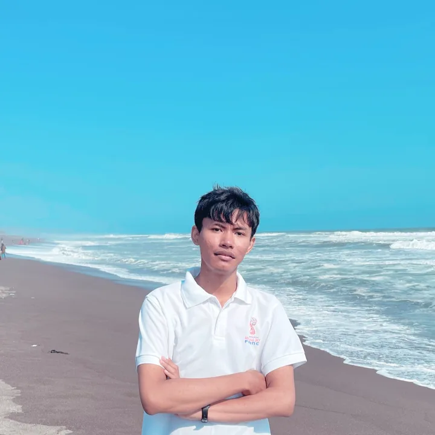
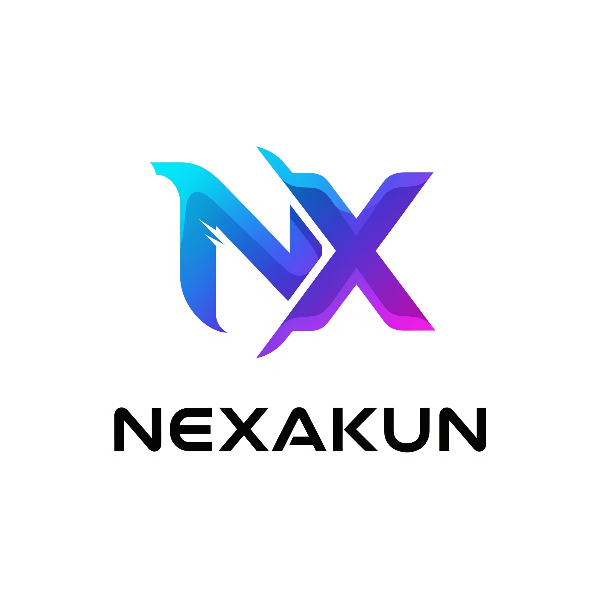

Frontend Development
Area penerapan: proyek web jual-beli akun dan penjualan tiket bioskop.
Tersedia untuk bekerja · Yogyakarta
Full-Stack Developer
Fresh graduate Informatika yang membangun aplikasi web dan mengeksplorasi machine learning. Skripsi saya menerapkan Random Forest untuk analisis sentimen ulasan Brawl Stars dengan akurasi 86%.
Hubungi saya
01 — Tentang
Lulusan S1 Informatika dari Universitas Amikom Yogyakarta dengan predikat cum laude. Sebelumnya, saya menempuh Rekayasa Perangkat Lunak di SMK Negeri 1 Bantul Yogyakarta.
Mencari posisi Junior Full-Stack Developer dan membawa pengalaman mengembangkan website, membimbing praktikum, serta berkolaborasi dengan tim. Saya menyukai pendekatan yang terstruktur: memahami kebutuhan, menguji solusi, dan mendokumentasikan pekerjaan.
02 — Keahlian
Keahlian pengembangan, machine learning, dan perangkat pendukung.
Area penerapan: proyek web jual-beli akun dan penjualan tiket bioskop.
PHP dan Laravel digunakan pada proyek jual-beli akun; PHP dan MySQL pada sistem tiket bioskop.
Diterapkan pada skripsi analisis ulasan Brawl Stars dengan Random Forest.
Figma digunakan untuk merancang konsep sistem donasi streamer dan pemesanan hotel.
Keahlian pendukung.
03 — Proyek pilihan
Proyek pengembangan web, machine learning, dan perancangan UI/UX.

PROJECT / 01E-commerce · Web
Aplikasi jual-beli akun game online yang dibangun menggunakan Laravel, dengan integrasi Midtrans dalam mode demo untuk proses pembayaran.
Lihat repositoryPemesanan tiket · Web
Website penjualan tiket bioskop dengan fitur pemesanan dan pembayaran online.
Lihat repositorySkripsi · Machine Learning
Menganalisis sentimen ulasan game Brawl Stars menggunakan algoritma Random Forest, dengan akurasi 86%.
Repository GitHubProyek akademik · UI/UX
Merancang UI/UX untuk dua konsep: sistem donasi streamer yang terinspirasi Saweria dan sistem pemesanan kamar untuk satu hotel.
04 — Pengalaman & Sertifikasi
05 — Pendidikan
2022 — 31 Agustus 2026
S1 — Informatika · Cum Laude
2019 — 2022
Rekayasa Perangkat Lunak
06 — Kontak
Saya tersedia untuk peluang Junior Full-Stack Developer di Yogyakarta maupun remote.